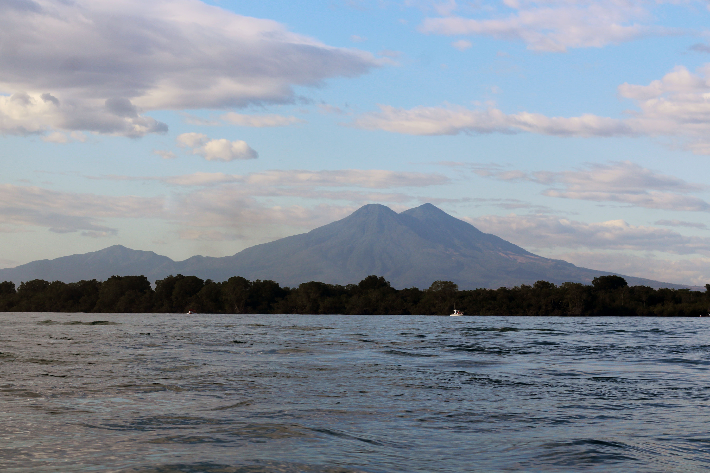
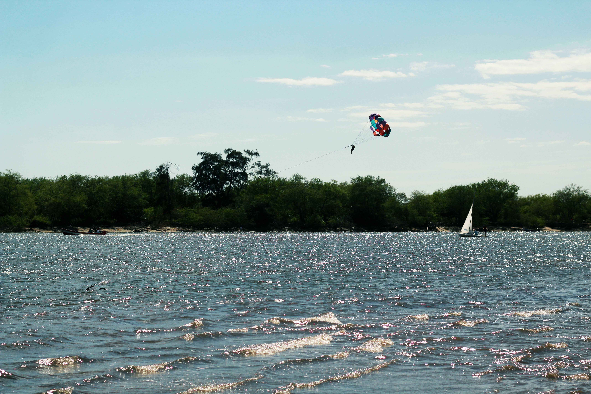
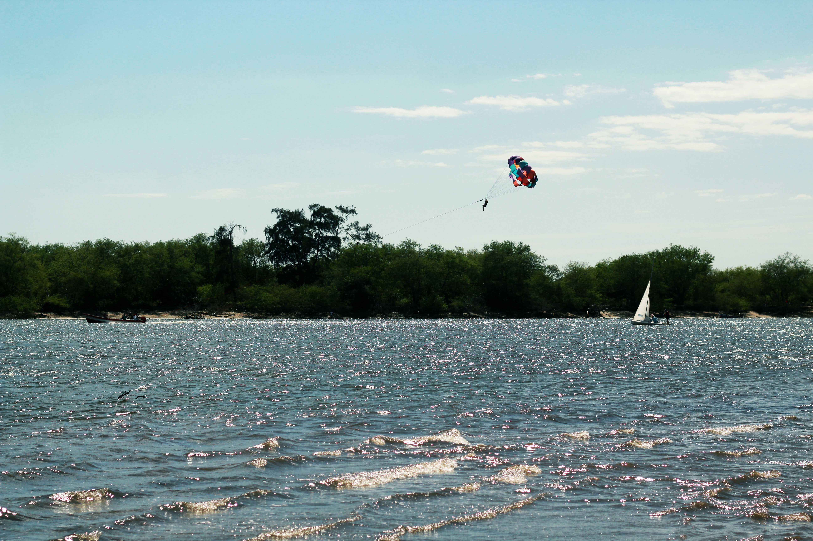

LA ISLITA
UN LUGAR MAGICO ✨ DONDE DESCANSAR
BIENVENIDOS A CASA FLOTANTE "LA ISLITA"
  

La Islita se encuentra en el estero de Jaltepeque nombre que significa "Cerro de Arena" , ubicado entre
los departamentos de La Paz y San Vicente, es uno de los habitats de mayor importancia de El Salvador
donde podras observar una alta biodiversidad de especies de fauna y flora.
Actividades
| PESCA |

⭐⭐⭐⭐ |
| PASEOS EN LANCHA |
⭐⭐⭐⭐ |
| SKYDRIVER |
⭐⭐⭐⭐ |
RESERVA AHORA